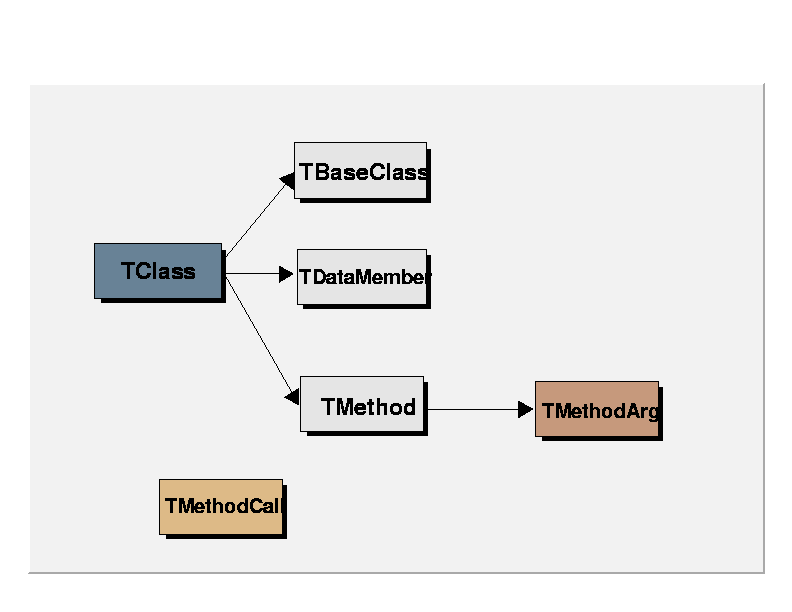

class TDataMember: public TDictionary
TDataMember. All ROOT classes may have RTTI (run time type identification) support added. The data is stored in so called DICTIONARY (look at TDictionary). Information about a class is stored in TClass. This information may be obtained via the CINT api - see class TCint. TClass has a list of TDataMember objects providing information about all data members of described class./*  */
TDataMember provides information about name of data member, its type, and comment field string. It also tries to find the TMethodCall objects responsible for getting/setting a value of it, and gives you pointers to these methods. This gives you a unique possibility to access protected and private (!) data members if only methods for doing that are defined. These methods could either be specified in a comment field, or found out automatically by ROOT: here's an example: suppose you have a class definition:
/*
class MyClass{
private:
Float_t fX1;
...
public:
void SetX1(Float_t x) {fX1 = x;};
Float_t GetX1() {return fX1;};
...
}
*/
Look at the data member name and method names: a data member name has a prefix letter (f) and has a base name X1 . The methods for getting and setting this value have names which consist of string Get/Set and the same base name. This convention of naming data fields and methods which access them allows TDataMember find this methods by itself completely automatically. To make this description complete, one should know, that names that are automatically recognized may be also: for data fields: either fXXX or fIsXXX; and for getter function GetXXX() or IsXXX() [where XXX is base name]. As an example of using it let's analyse a few lines which get and set a fEditable field in TCanvas:
/*
TCanvas *c = new TCanvas("c"); // create a canvas
TClass *cl = c->IsA(); // get its class description object.
TDataMember *dm = cl->GetDataMember("fEditable"); //This is our data member
TMethodCall *getter = dm->GetterMethod(c); //find a method that gets value!
Long_t l; // declare a storage for this value;
getter->Execute(c,"",l); // Get this Value !!!! It will appear in l !!!
TMethodCall *setter = dm->SetterMethod(c);
setter->Execute(c,"0",); // Set Value 0 !!!
*/
This trick is widely used in ROOT TContextMenu and dialogs for obtaining current values and put them as initial values in dialog fields. If you don't want to follow the convention of naming used by ROOT you still could benefit from Getter/Setter method support: the solution is to instruct ROOT what the names of these routines are. The way to do it is putting this information in a comment string to a data field in your class declaration:
/*
class MyClass{
Int_t mydata; // *OPTIONS={GetMethod="Get";SetMethod="Set"}
...
Int_t Get() const { return mydata;};
void Set(Int_t i) {mydata=i;};
}
*/
However, this getting/setting functions are not the only feature of this class. The next point is providing lists of possible settings for the concerned data member. The idea is to have a list of possible options for this data member, with strings identifying them. This is used in dialogs with parameters to set - for details see TMethodArg, TRootContextMenu, TContextMenu. This list not only specifies the allowed value, but also provides strings naming the options. Options are managed via TList of TOptionListItem objects. This list is also created automatically: if a data type is an enum tynpe, the list will have items describing every enum value, and named according to enum name. If type is Bool_t, two options "On" and "Off" with values 0 and 1 are created. For other types you need to instruct ROOT about possible options. The way to do it is the same as in case of specifying getter/setter method: a comment string to a data field in Your header file with class definition. The most general format of this string is:
/*
*OPTIONS={GetMethod="getter";SetMethod="setter";Items=(it1="title1",it2="title2", ... ) }
*/
While parsing this string ROOT firstly looks for command-tokens: GetMethod, SetMethod, Items; They must be preceded by string *OPTIONS= , enclosed by {} and separated by semicolons ";". All command token should have a form TOKEN=VALUE. All tokens are optional. The names of getter and setter method must be enclosed by double-quote marks (") . Specifications of Items is slightly more complicated: you need to put token ITEMS= and then enclose all options in curly brackets "()". You separate options by comas ",". Each option item may have one of the following forms:
/*
IntegerValue = "Text Label"
EnumValue = "Text Label"
"TextValue" = Text Label"
*/
One can sepcify values as Integers or Enums - when data field is an Integer, Float or Enum type; as texts - for char (more precisely: Option_t). As mentioned above - this information are mainly used by contextmenu, but also in Dump() and Inspect() methods and by the THtml class.
Function Members (Methods)
public:
| TDataMember(DataMemberInfo_t* info = 0, TClass* cl = 0) | |
| virtual | ~TDataMember() |
| void | TObject::AbstractMethod(const char* method) const |
| virtual void | TObject::AppendPad(Option_t* option = "") |
| virtual void | TObject::Browse(TBrowser* b) |
| static TClass* | Class() |
| virtual const char* | TObject::ClassName() const |
| virtual void | TNamed::Clear(Option_t* option = "") |
| virtual TObject* | TNamed::Clone(const char* newname = "") const |
| virtual Int_t | TNamed::Compare(const TObject* obj) const |
| virtual void | TNamed::Copy(TObject& named) const |
| virtual void | TObject::Delete(Option_t* option = "")MENU |
| virtual Int_t | TObject::DistancetoPrimitive(Int_t px, Int_t py) |
| virtual void | TObject::Draw(Option_t* option = "") |
| virtual void | TObject::DrawClass() constMENU |
| virtual TObject* | TObject::DrawClone(Option_t* option = "") constMENU |
| virtual void | TObject::Dump() constMENU |
| virtual void | TObject::Error(const char* method, const char* msgfmt) const |
| virtual void | TObject::Execute(const char* method, const char* params, Int_t* error = 0) |
| virtual void | TObject::Execute(TMethod* method, TObjArray* params, Int_t* error = 0) |
| virtual void | TObject::ExecuteEvent(Int_t event, Int_t px, Int_t py) |
| virtual void | TObject::Fatal(const char* method, const char* msgfmt) const |
| virtual void | TNamed::FillBuffer(char*& buffer) |
| virtual TObject* | TObject::FindObject(const char* name) const |
| virtual TObject* | TObject::FindObject(const TObject* obj) const |
| Int_t | GetArrayDim() const |
| const char* | GetArrayIndex() const |
| TClass* | GetClass() const |
| TDataType* | GetDataType() const |
| static TDictionary* | TDictionary::GetDictionary(const char* name) |
| static TDictionary* | TDictionary::GetDictionary(const type_info& typeinfo) |
| virtual Option_t* | TObject::GetDrawOption() const |
| static Long_t | TObject::GetDtorOnly() |
| const char* | GetFullTypeName() const |
| virtual const char* | TObject::GetIconName() const |
| Int_t | GetMaxIndex(Int_t dim) const |
| virtual const char* | TNamed::GetName() const |
| virtual char* | TObject::GetObjectInfo(Int_t px, Int_t py) const |
| static Bool_t | TObject::GetObjectStat() |
| Long_t | GetOffset() const |
| Long_t | GetOffsetCint() const |
| virtual Option_t* | TObject::GetOption() const |
| TList* | GetOptions() const |
| TMethodCall* | GetterMethod(TClass* cl = 0) |
| virtual const char* | TNamed::GetTitle() const |
| const char* | GetTrueTypeName() const |
| const char* | GetTypeName() const |
| virtual UInt_t | TObject::GetUniqueID() const |
| Int_t | GetUnitSize() const |
| virtual Bool_t | TObject::HandleTimer(TTimer* timer) |
| virtual ULong_t | TNamed::Hash() const |
| virtual void | TObject::Info(const char* method, const char* msgfmt) const |
| virtual Bool_t | TObject::InheritsFrom(const char* classname) const |
| virtual Bool_t | TObject::InheritsFrom(const TClass* cl) const |
| virtual void | TObject::Inspect() constMENU |
| void | TObject::InvertBit(UInt_t f) |
| virtual TClass* | IsA() const |
| Bool_t | IsaPointer() const |
| Bool_t | IsBasic() const |
| Bool_t | IsEnum() const |
| virtual Bool_t | TObject::IsEqual(const TObject* obj) const |
| virtual Bool_t | TObject::IsFolder() const |
| Bool_t | TObject::IsOnHeap() const |
| Bool_t | IsPersistent() const |
| virtual Bool_t | TNamed::IsSortable() const |
| Int_t | IsSTLContainer() |
| Bool_t | TObject::IsZombie() const |
| virtual void | TNamed::ls(Option_t* option = "") const |
| void | TObject::MayNotUse(const char* method) const |
| virtual Bool_t | TObject::Notify() |
| void | TObject::Obsolete(const char* method, const char* asOfVers, const char* removedFromVers) const |
| static void | TObject::operator delete(void* ptr) |
| static void | TObject::operator delete(void* ptr, void* vp) |
| static void | TObject::operator delete[](void* ptr) |
| static void | TObject::operator delete[](void* ptr, void* vp) |
| void* | TObject::operator new(size_t sz) |
| void* | TObject::operator new(size_t sz, void* vp) |
| void* | TObject::operator new[](size_t sz) |
| void* | TObject::operator new[](size_t sz, void* vp) |
| virtual void | TObject::Paint(Option_t* option = "") |
| virtual void | TObject::Pop() |
| virtual void | TNamed::Print(Option_t* option = "") const |
| virtual Long_t | Property() const |
| virtual Int_t | TObject::Read(const char* name) |
| virtual void | TObject::RecursiveRemove(TObject* obj) |
| void | TObject::ResetBit(UInt_t f) |
| virtual void | TObject::SaveAs(const char* filename = "", Option_t* option = "") constMENU |
| virtual void | TObject::SavePrimitive(ostream& out, Option_t* option = "") |
| void | TObject::SetBit(UInt_t f) |
| void | TObject::SetBit(UInt_t f, Bool_t set) |
| virtual void | TObject::SetDrawOption(Option_t* option = "")MENU |
| static void | TObject::SetDtorOnly(void* obj) |
| virtual void | TNamed::SetName(const char* name)MENU |
| virtual void | TNamed::SetNameTitle(const char* name, const char* title) |
| static void | TObject::SetObjectStat(Bool_t stat) |
| TMethodCall* | SetterMethod(TClass* cl) |
| virtual void | TNamed::SetTitle(const char* title = "")MENU |
| virtual void | TObject::SetUniqueID(UInt_t uid) |
| virtual void | ShowMembers(TMemberInspector& insp) |
| virtual Int_t | TNamed::Sizeof() const |
| virtual void | Streamer(TBuffer& b) |
| void | StreamerNVirtual(TBuffer& b) |
| virtual void | TObject::SysError(const char* method, const char* msgfmt) const |
| Bool_t | TObject::TestBit(UInt_t f) const |
| Int_t | TObject::TestBits(UInt_t f) const |
| virtual void | TObject::UseCurrentStyle() |
| virtual void | TObject::Warning(const char* method, const char* msgfmt) const |
| virtual Int_t | TObject::Write(const char* name = 0, Int_t option = 0, Int_t bufsize = 0) |
| virtual Int_t | TObject::Write(const char* name = 0, Int_t option = 0, Int_t bufsize = 0) const |
protected:
| TDataMember(const TDataMember&) | |
| virtual void | TObject::DoError(int level, const char* location, const char* fmt, va_list va) const |
| void | TObject::MakeZombie() |
| TDataMember& | operator=(const TDataMember&) |
Data Members
public:
| enum { | kObjIsPersistent | |
| }; | ||
| enum TDictionary::ESTLType { | kNone | |
| kVector | ||
| kList | ||
| kDeque | ||
| kMap | ||
| kMultimap | ||
| kSet | ||
| kMultiset | ||
| }; | ||
| enum TObject::EStatusBits { | kCanDelete | |
| kMustCleanup | ||
| kObjInCanvas | ||
| kIsReferenced | ||
| kHasUUID | ||
| kCannotPick | ||
| kNoContextMenu | ||
| kInvalidObject | ||
| }; | ||
| enum TObject::[unnamed] { | kIsOnHeap | |
| kNotDeleted | ||
| kZombie | ||
| kBitMask | ||
| kSingleKey | ||
| kOverwrite | ||
| kWriteDelete | ||
| }; |
protected:
| TString | TNamed::fName | object identifier |
| TString | TNamed::fTitle | object title |
private:
| TClass* | fClass | pointer to the class |
| TDataType* | fDataType | pointer to data basic type descriptor |
| TString | fFullTypeName | full type description of data member, e,g.: "class TDirectory*". |
| DataMemberInfo_t* | fInfo | pointer to CINT data member info |
| Long_t | fOffset | offset |
| TList* | fOptions | list of possible values 0=no restrictions |
| Long_t | fProperty | Property |
| Int_t | fSTLCont | STL type |
| TString | fTrueTypeName | full type description with no typedef |
| TString | fTypeName | data member type, e,g.: "class TDirectory*" -> "TDirectory". |
| TMethodCall* | fValueGetter | method that returns a value; |
| TMethodCall* | fValueSetter | method which sets value; |
Class Charts
{kind=link}
{kind=link}
{kind=link}
{kind=link}
Function documentation
TDataMember(DataMemberInfo_t* info = 0, TClass* cl = 0)
Default TDataMember ctor. TDataMembers are constructed in TClass via a call to TCint::CreateListOfDataMembers(). It parses the comment string, initializes optionlist and getter/setter methods.
const char * GetArrayIndex() const
If the data member is pointer and has a valid array size in its comments GetArrayIndex returns a string pointing to it; otherwise it returns an empty string.
const char * GetTypeName() const
Get type of data member, e,g.: "class TDirectory*" -> "TDirectory".
const char * GetFullTypeName() const
Get full type description of data member, e,g.: "class TDirectory*".
const char * GetTrueTypeName() const
Get full type description of data member, e,g.: "class TDirectory*".
Int_t GetUnitSize() const
Get the sizeof the underlying type of the data member (i.e. if the member is an array sizeof(member)/length)
TMethodCall * GetterMethod(TClass* cl = 0)
Return a TMethodCall method responsible for getting the value of data member. The cl argument specifies the class of the object which will be used to call this method (in case of multiple inheritance TMethodCall needs to know this to calculate the proper offset).
TMethodCall * SetterMethod(TClass* cl)
Return a TMethodCall method responsible for setting the value of data member. The cl argument specifies the class of the object which will be used to call this method (in case of multiple inheritance TMethodCall needs to know this to calculate the proper offset).